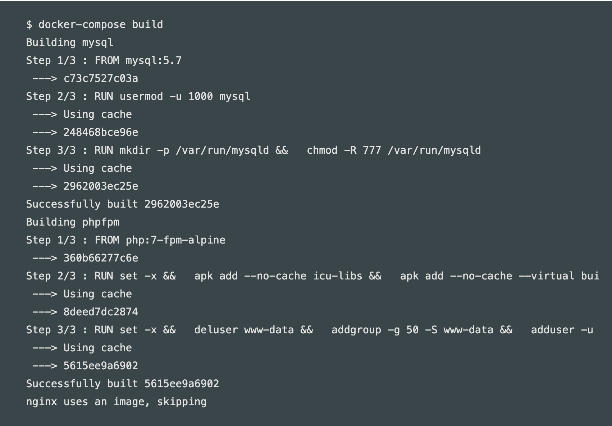
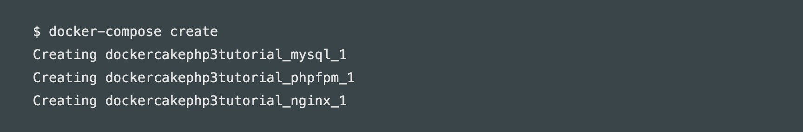
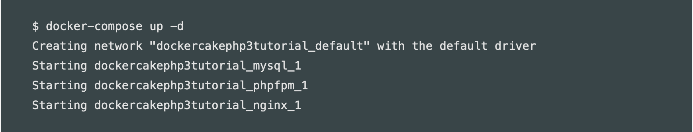
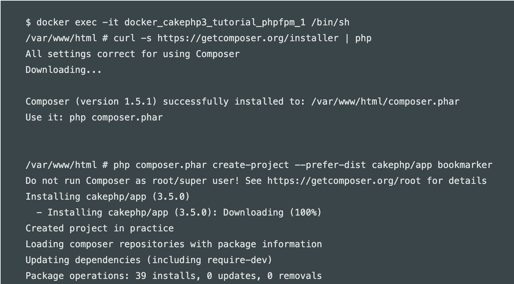
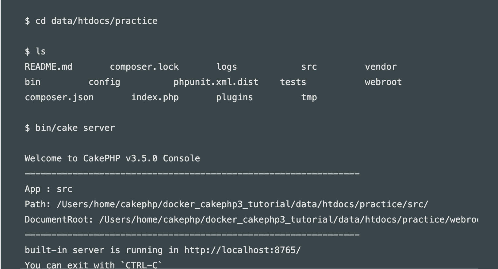
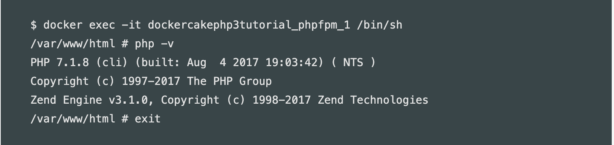
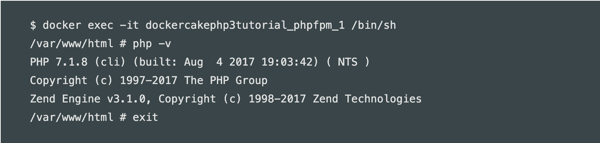
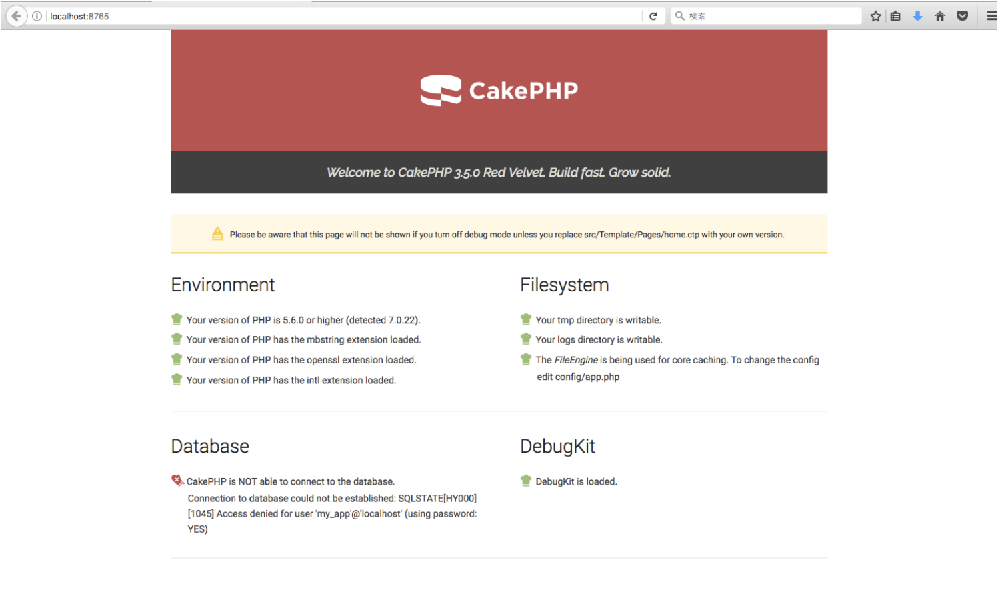

使用Docker进行Cakephp3开发环境搭建
使用Docker构建
本次使用Github公开的Dockerfile，利用docker-compose建立container.
使用的image是php:7-fpm-alpine
1.首先将上面的克隆到本地home

2.然后使用docker-compose命令进行构建
 build的时候如果nginx存在的话会被跳过，需要确认的是这三个mysql、phpfpm、nginx有没有build成功。3.然后创建Container
4.确认是否创建成功

5.启动Container，同时启动nginx服务器
注意：如果之前有创建过Container，并存在nginx container的时候，端口号重复所以会出现错误。此时应该停止Container然后再重复以上步骤。
6.然后Cakephp的composer装入phpfpm Container并安装。同时完成项目的创建。
7.安装和项目构建完成后，退出Container
8.启动服务器，就能看到确认画面了！
如果服务器版本不对则可能出现错误。此时需要brew在本地进行安装。
因为版本不同安装的东西也不同所以要进入Container里对php的版本进行确认。
版本为7.18，所以要安装php71-intl。
再启动服务器就能看到启动画面了。
通过此链接确认画面 http://localhost:8765/
数据库连接
有时数据库无法连接上，则采用下面的方法进行确认：
本地数据库连接方法：
1.确认启动中的Container
1 | $ docker ps |
2.找到启动中的mysql Container
确认到host为127.0.0.1,port为3306
1 | 259d8b05f8ec mysql:5.6 ... 127.0.0.1:3306->3306/tcp |
3.修改参数
cakephp的app.php的database改成「localhost」-> 「127.0.0.1」
docker-compose.yml里的database的port改成相应的3306
1 | services: |
4.重新启动
1 | $ docker-compose down |
已存在数据库连接方法：
1.修改以下文件
app.php
1 | 'host' => 'xxxxx'(你的数据库host), |
docker-compose.yml
1 | environment: |
2.进入mysql Container，确认是否已经连接上
1 | docker exec -it mysqlコンテナ名 sh |
3.重新启动
1 | $ docker-compose down |
途中可能会出现下面的问题
问题1:
1 | ➜ ~ brew install homebrew/php/php71-intl |
解决方法:
1 | # Save all old configurations, so the new packaes can recreate their versions -- eases the migration |
使用下面进行确认
1 | brew list | grep php: |
然后再安装
1 | brew install php@7.1 |
最后composer install再启动服务器就好了
问题2:
1 | E: Failed to fetch http://deb.debian.org/debian/dists/stretch/main/binary-amd64/Packages Error writing to output file - write (28: No space left on device) Error writing to file - write (28: No space left on device) |
解决方法：
空间不足无法启动的情况，可以将所有的Container和Image都删除，再启动
删除所有的Container
1 | docker rm -f $(docker ps -aq) |
删除所有的Images
1 | docker rmi -f $(docker images -q) |
删除所有的docker volume
1 | docker volume rm -f $(docker volume ls -q) |
重新启动
1 | $ docker-compose down |